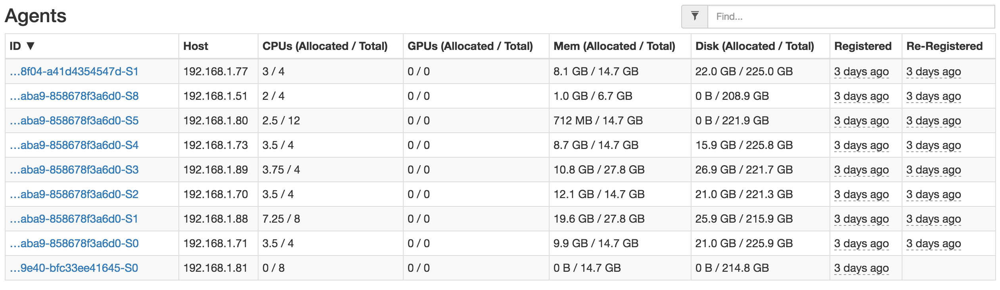

资源预留（Reservation）
Mesos提供了在特定Agent节点上预留资源的功能。资源静态预留在0.14.0版本第一次加入，可以让运维人员在Agent节点启动时指定预留的资源。在0.23.0版本时，资源预留开始支持集群内的动态预留功能。
这两种预留方式都是针对角色进行资源预留。
静态预留
运维人员可以在Agent节点上为某个角色配置预留资源。预留资源通过命令行参数--resources设置，例如，假设一个Agent节点有12CPUs和6144MB内存可用，其中ads角色想要保留8CPUs和4096MB内存，则可以按如下配置启动该Agent节点：
$ mesos-slave --master=<ip>:<port> --resources="cpus:4;mem:2048;cpus(ads):8;mem(ads):4096"警告⚠️：为了修改静态预留，运维人员必须在--resources参数中指定新配置然后清空并重新启动Agent节点。
注意：静态预留特性主要用于向后兼容，推荐方案是将Agent节点上所有资源都通过--resources标记为未预留的，然后通过Master提供的HTTP管理端口动态分配。
动态预留
静态预留的缺点是静态预留的资源既不能被其它角色再次分配也不能被撤销预留（除非重启Agent节点并重新配置）。动态预留可以在Agent节点启动后，让运维人员或授权的框架随时预留或撤销预留资源。
默认情况下，框架和运维人员可以为任何角色保留资源，并且可以取消保留任何动态保留的资源。可以通过授权机制对预留和撤销动作进行控制。要使用此功能，Mesos的Master节点必须进行必要的ACLs配置。详细信息请参考授权章节。
Mesos的Master向框架公布资源时，框架可以通过
acceptOffers接口向Master响应Offer::Operation::Reserve 和 Offer::Operation::Unreserve消息进行资源预留和撤销。运维人员可以通过Mesos的Master节点调用
/reserve 和 /unreserve两个HTTP管理接口进行资源预留和撤销。
如果在同一Agent节点上为同一个角色做了两个资源动态预留，则两次预留会合并为一个资源预留操作。类似的，Mesos允许部分撤销预留操作：一个撤销操作可以仅撤销某角色在指定Agent节点上预留的所有资源的一部分，剩余部分仍被保持预留。
如果动态预留的资源正被使用或在其上创建了持久化卷，则该资源将不能被撤销预留。创建了持久化卷的动态预留资源在撤销前必须先销毁卷。
标记动态预留
可以给动态预留的资源设置一个自定义键值对的标签列表，用来关联任意的元数据。例如，框架可以使用标签来识别在给定Agent节点上已经保留的资源的预期目的。注意，具有不同标签的两个资源预留将不会被组合在一起成为单个预留，即使这两个预留在同一Agent节点上并且都使用了相同的角色。
框架调度API
Offer::Operation::Reserve
框架可以在资源供应环节设置资源动态预留。假定框架收到了12CPUs和6144MB内存的资源供应：
{
"id": <offer_id>,
"framework_id": <framework_id>,
"slave_id": <slave_id>,
"hostname": <hostname>,
"resources": [
{ "name": "cpus", "type": "SCALAR", "scalar": { "value": 12 }, "role": "*", },
{ "name": "mem", "type": "SCALAR", "scalar": { "value": 6144 }, "role": "*", }
]
}如果框架想预留8CPUs和4096MB内存，则框架向Master返回如下的响应消息。如果框架向Master注册时提供了principal，则响应消息中的值必须与注册时的值一致，否则可以提供任意值或空值，但principal字段必须存在。
{
"type": Offer::Operation::RESERVE,
"reserve": {
"resources": [
{
"name": "cpus",
"type": "SCALAR",
"scalar": { "value": 8 },
"role": <framework_role>,
"reservation": { "principal": <framework_principal> }
},
{
"name": "mem",
"type": "SCALAR",
"scalar": { "value": 4096 },
"role": <framework_role>,
"reservation": { "principal": <framework_principal> }
}
]
}
}如果资源预留成功，则随后的资源供应会包含下述资源：
{
"id": <offer_id>,
"framework_id": <framework_id>,
"slave_id": <slave_id>,
"hostname": <hostname>,
"resources": [
{
"name": "cpus", "type": "SCALAR", "scalar": { "value": 8 },
"role": <framework_role>, "reservation": { "principal": <framework_principal> }
},
{
"name": "mem", "type": "SCALAR", "scalar": { "value": 4096 },
"role": <framework_role>, "reservation": { "principal": <framework_principal> }
},
]
}Offer::Operation::Unreserve
框架可以在资源供应环节撤销对资源的动态预留。继续沿用上例，如果希望撤销之前预留的8CPUs和4096MB内存资源，则可以在收到资源供应消息时，返回如下响应消息：
{
"type": Offer::Operation::UNRESERVE,
"unreserve": {
"resources": [
{
"name": "cpus", "type": "SCALAR", "scalar": { "value": 8 },
"role": <framework_role>, "reservation": { "principal": <framework_principal> }
},
{
"name": "mem", "type": "SCALAR", "scalar": { "value": 4096 },
"role": <framework_role>, "reservation": { "principal": <framework_principal> }
}
]
}
}撤销成功后，撤销的资源就可以重新分配给其它框架。
HTTP管理接口
资源动态预留和撤销也可以通过HTTP管理接口或其它管理工具实现。
/reserve (since 0.25.0)
$ curl -i \
-u <operator_principal>:<password> \
-d slaveId=<slave_id> \
-d resources='[ { "name": "cpus", "type": "SCALAR", "scalar": { "value": 8 }, "role": "ads", "reservation": { "principal": <operator_principal> } }, { "name": "mem", "type": "SCALAR", "scalar": { "value": 4096 }, "role": "ads", "reservation": { "principal": <operator_principal> } } ]' \
-X POST http://<ip>:<port>/master/reserve上述请求的响应为下述中的一种：
202 Accepted: Request accepted (see below).
400 BadRequest: Invalid arguments (e.g., missing parameters).
401 Unauthorized: Unauthenticated request.
403 Forbidden: Unauthorized request.
409 Conflict: Insufficient resources to satisfy the reserve operation.
/unreserve (since 0.25.0)
$ curl -i \
-u <operator_principal>:<password> \
-d slaveId=<slave_id> \
-d resources='[ { "name": "cpus", "type": "SCALAR", "scalar": { "value": 8 }, "role": "ads", "reservation": { "principal": <reserver_principal> } }, { "name": "mem", "type": "SCALAR", "scalar": { "value": 4096 }, "role": "ads", "reservation": { "principal": <reserver_principal> } } ]' \
-X POST http://<ip>:<port>/master/unreserve上述请求的响应为下述中的一种：
202 Accepted: Request accepted (see below).
400 BadRequest: Invalid arguments (e.g., missing parameters).
401 Unauthorized: Unauthenticated request.
403 Forbidden: Unauthorized request.
409 Conflict: Insufficient resources to satisfy the unreserve operation.
查看预留的资源
集群中每个Agent节点上的资源预留信息可以通过Master查询http://<Master-IP>:5050/slaves返回的信息（位于reserved_resources_all节点下）查看。这些信息也可以在Agent节点上的http://<Master-IP>:5050/state管理接口下查看。可以通过这些接口确认在Agent节点上的资源动态预留是否成功。
提示：在DCOS中，除了上述接口外，也可以通过访问：http://<Master-IP>/mesos查看所有的Agents列表，并查看特定Agent上的资源预留:

参考
https://github.com/apache/mesos/blob/master/docs/reservation.md